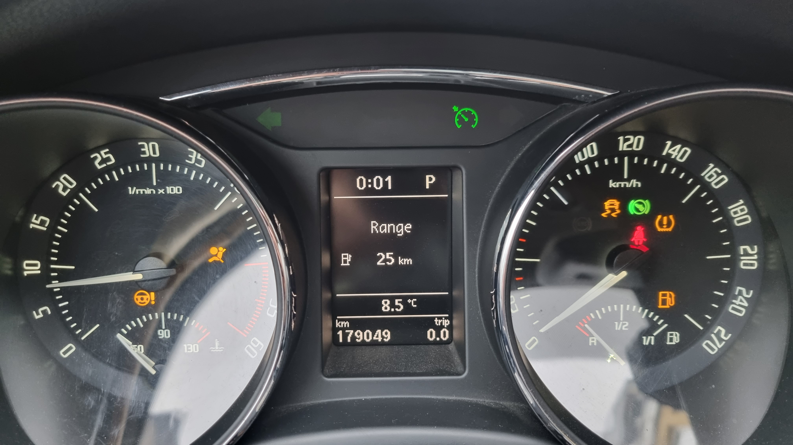
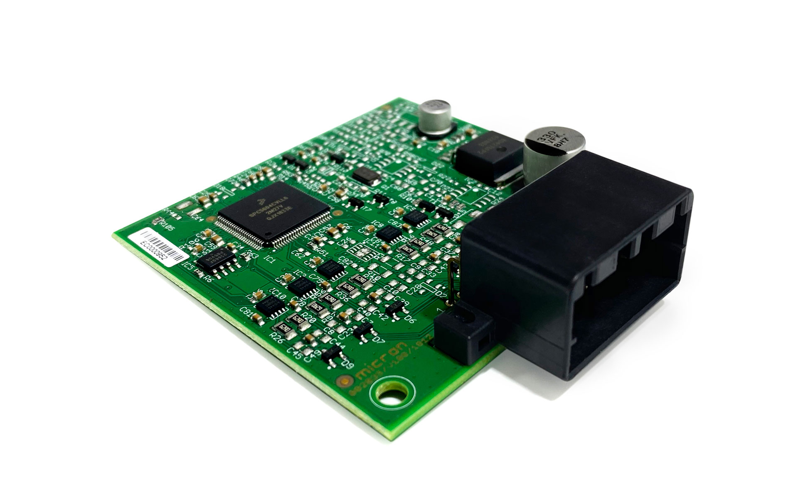

Sistemul Electric: Energia Vehiculului
Sistemul electric este responsabil pentru pornirea motorului și alimentarea tuturor consumatorilor, de la faruri până la sistemele complexe de navigație.
- Bateria: Stochează energie chimică și o transformă în curent electric pentru pornire.
- Alternatorul: Generatorul care produce curent în timp ce motorul funcționează.
- Cablajul: Sistemul de "nervi" care distribuie energia în toată mașina.

Martori de Bord: Ce ne transmite mașina?
Check Engine
Indică o defecțiune la sistemul de injecție sau emisii.
Baterie
Alternatorul nu încarcă sau bateria este descărcată.
Sistem Frânare
Sistemul de antiblocare a roților are o eroare tehnică.
Fază Lungă
Luminile de drum sunt active și pot orbi ceilalți șoferi.
Unitatea de Control (ECU)
Unitatea de Control a Motorului (ECU) funcționează ca sistemul nervos central al vehiculului, optimizând performanța prin procesarea datelor primite de la o rețea vastă de senzori (temperatură, presiune, oxigen). Acesta calculează în timp real amestecul ideal de aer-combustibil și momentul aprinderii, asigurând un echilibru între putere, consum și emisii. Pe lângă managementul motorului, ECU are rolul vital de a monitoriza starea tehnică a mașinii, activând moduri de protecție și stocând coduri de eroare pentru diagnoză în cazul detectării unor anomalii.
